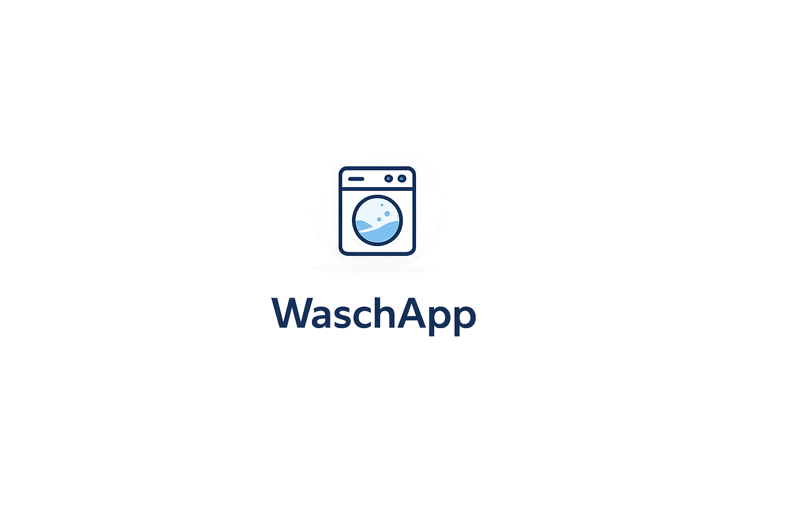

Waschraum-Reservierung
Reserviere deinen Zeitslot in wenigen Sekunden.
Dein Waschgang ist beendet. Bitte entferne deine Wäsche innerhalb von 15 min, damit die Maschine für andere freigegeben werden kann.
Diese Aktion kann nicht rückgängig gemacht werden.